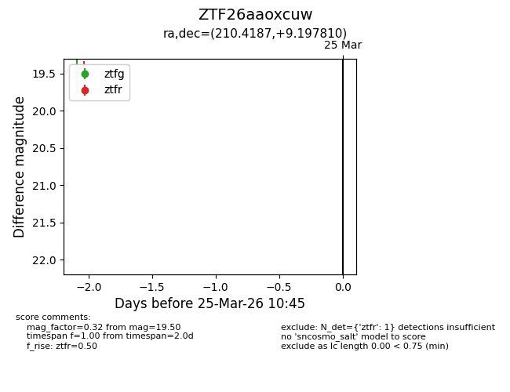
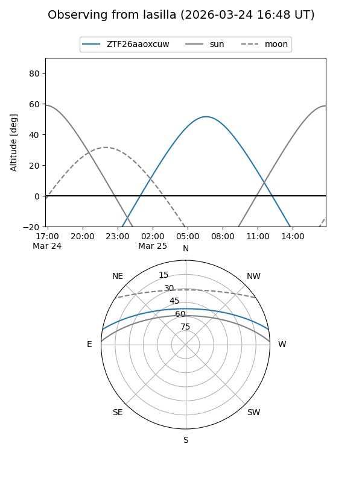
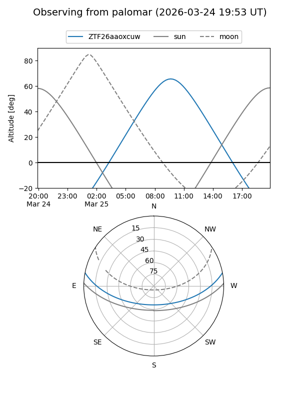

ZTF26aaoxcuw
Target ZTF26aaoxcuw at 2026-03-25 10:48
Aliases and brokers:
FINK: link
Lasair: link
ALeRCE: link
alt names
ZTF26aaoxcuw (ztf,fink_ztf)
Coordinates:
equatorial (ra, dec) = 210.4187,+9.19781
equatorial (HMS+DMS) = 14:01:40.49,+09:11:52.12
galactic (l, b) = (349.0022,+65.57393)
Flags:
Photometry:
last ztfr=19.50
1 ztfr detections
Lightcurve

Visibility


Additional plots